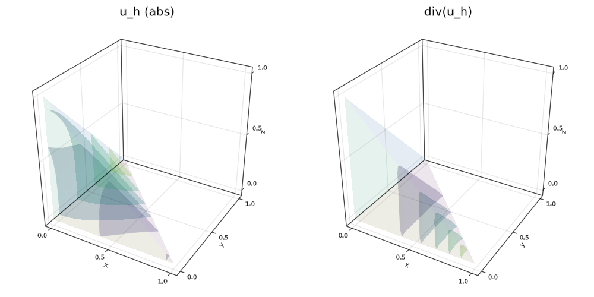

302 : Bestapproximation Hdiv 3D
This example computes the L2-bestapproximation of some given vector-valued function into an Hdiv-conforming finite element space. It also preserves the divergence of the function in the sense that the divergence of the approximation equals the piecewise integral mean of the exact divergence. Afterwards the L2 error (also of the divergence) is computed.
module Example302_BestapproximationHdiv3D
using GradientRobustMultiPhysics
using ExtendableGrids
using GridVisualize
# define some vector field that should be approximated
function exact_function!(result,x)
result[1] = x[1]^3+x[3]^2
result[2] = -x[1]^2 + x[2] + 1
result[3] = x[1]*x[2]
end
const u = DataFunction(exact_function!, [3,3]; name = "u", dependencies = "X", quadorder = 3)
# everything is wrapped in a main function
function main(; verbosity = 0, Plotter = nothing)
# set log level
set_verbosity(verbosity)
# generate a unit square mesh and refine
xgrid = uniform_refine(reference_domain(Tetrahedron3D),4)
# setup a bestapproximation problem via a predefined prototype
Problem = L2BestapproximationProblem(u; bestapprox_boundary_regions = [])
# add a new unknown (Lagrange multiplier that handles the divergence constraint)
# here 1 is the number of components (it is scalarvalued) and 3 is the space dimension
add_unknown!(Problem; unknown_name = "p", equation_name = "divergence constraint")
add_operator!(Problem, [1,2], LagrangeMultiplier(Divergence))
# add the right-hand side data for the constraint and inspect the defined problem
div_u = div(u)
add_rhsdata!(Problem, 2, RhsOperator(Identity, [0], div_u))
@show Problem
# choose some (inf-sup stable) finite element types
#FEType = [HDIVRT0{3}, H1P0{1}]
FEType = [HDIVBDM1{3}, H1P0{1}]
FES = [FESpace{FEType[1]}(xgrid),FESpace{FEType[2]}(xgrid; broken = true)]
# create a solution vector and solve the problem
Solution = FEVector{Float64}(["u_h","p_h"],FES)
solve!(Solution, Problem)
# plot
p = GridVisualizer(; Plotter = Plotter, layout = (1,2), clear = true, resolution = (1000,500))
scalarplot!(p[1,1], xgrid, view(nodevalues(Solution[1]; abs = true),1,:), levels = 5, title = "u_h (abs)")
scalarplot!(p[1,2], xgrid, view(nodevalues(Solution[1], Divergence),1,:), levels = 5, title = "div(u_h)")
# calculate L2 error and L2 divergence error
L2Error = L2ErrorIntegrator(Float64, u, Identity)
L2DivergenceError = L2ErrorIntegrator(Float64, div_u, Divergence)
println("\tL2error(Id) = $(sqrt(evaluate(L2Error,Solution[1])))")
println("\tL2error(div) = $(sqrt(evaluate(L2DivergenceError,Solution[1])))")
end
endThis page was generated using Literate.jl.
Default output:
julia> Example302_BestapproximationHdiv3D.main()
PDE-DESCRIPTION
===============
system name = L2-Bestapproximation problem
id | unknown name / equation name
[1] | u / L2-bestapproximation equation
[2] | p / divergence constraint
LHS block | PDEOperator(s)
[1,1] | (u,v) (APT = SymmetricBilinearForm, AT = ON_CELLS, regions = [0])
[1,2] | (div(v),q) (APT = BilinearForm, AT = ON_CELLS, regions = [0])
[2,1] | none
[2,2] | none
RHS block | PDEOperator(s)
[1] | (u, id(v)) (APT = LinearForm, AT = ON_CELLS, regions = [0])
[2] | (div(u), id(v)) (APT = LinearForm, AT = ON_CELLS, regions = [0])
BoundaryOperator[1] :
BoundaryOperator[2] :
Problem =
L2error(Id) = 0.00017706474627459632
L2error(div) = 0.009878280436234928